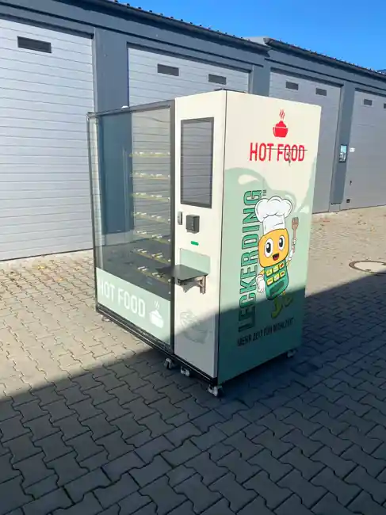

Echte Mahlzeiten
Vollwertige Gerichte statt einer reinen Snackauswahl – warm serviert oder gekühlt mitgenommen.
Sortiment entdecken ↗Über LECKERDING™ · Berlin
Wir sind LECKERDING: ein Berliner Unternehmen für vollwertige Mahlzeiten aus Heißverpflegungsautomaten. Für Menschen, deren Alltag nicht nach Kantinenöffnungszeiten funktioniert.
Unsere Mission
Schichtarbeit, späte Vorlesungen, lange Reisetage und der Büroalltag haben eines gemeinsam: Nicht immer ist dann eine Kantine geöffnet, wenn jemand essen möchte.
LECKERDING verbindet gekühlte, vorverpackte Gerichte mit integrierter Erwärmung und bargeldloser Bezahlung. So wird eine vollwertige Mahlzeit direkt am Standort zugänglich – ohne eigene Küche.
So funktioniert unser Automat ↗
Wofür wir stehen
Von der Gerichteauswahl bis zur Betreuung vor Ort soll jede Entscheidung den Alltag vereinfachen.
Vollwertige Gerichte statt einer reinen Snackauswahl – warm serviert oder gekühlt mitgenommen.
Sortiment entdecken ↗Wir koordinieren Befüllung, Kühlkontrolle, Reinigung und technische Betreuung im vereinbarten Umfang.
Fragen zur Betreuung ↗Für Orte, an denen Menschen auch außerhalb der üblichen Essenszeiten eine Mahlzeit benötigen.
Standorte ansehen ↗Der Gründer
Gründer & Geschäftsführer · LECKERDING GmbH
Die Idee hinter LECKERDING entstand aus einer einfachen Beobachtung: Eine warme, bezahlbare Mahlzeit fehlt im Alltag oft genau dann, wenn sie am dringendsten gebraucht wird. Daraus entwickelte sich unser Konzept für Verpflegung direkt am Ort des Bedarfs.
„Unser Ziel ist es, hochwertige Mahlzeiten so einfach verfügbar zu machen wie einen Kaffee – nur sättigender und relevanter für den Alltag.“
Im LECKERDING Journal teilen wir Gedanken zu Verpflegung im Arbeitsalltag.
Kontakt aufnehmen ↗Gemeinsam planen
Wir prüfen Anfragen aus Berlin und Brandenburg individuell – auch wenn Sie noch nicht sicher sind, welches Modell passt.